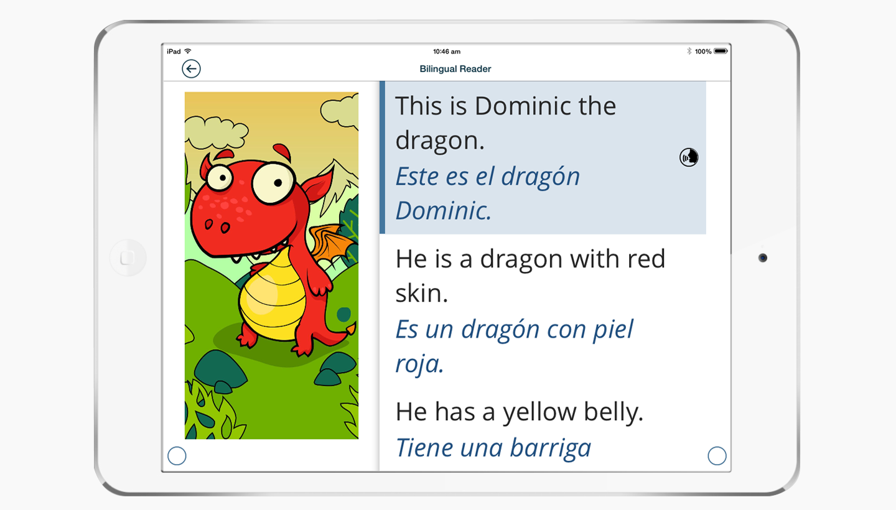
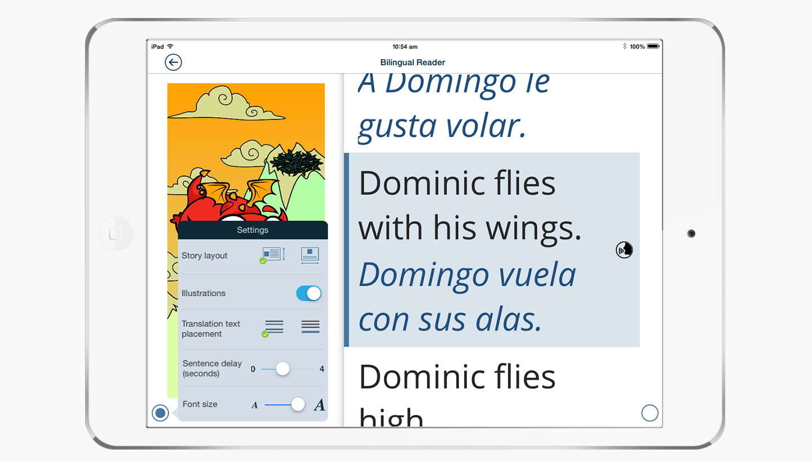
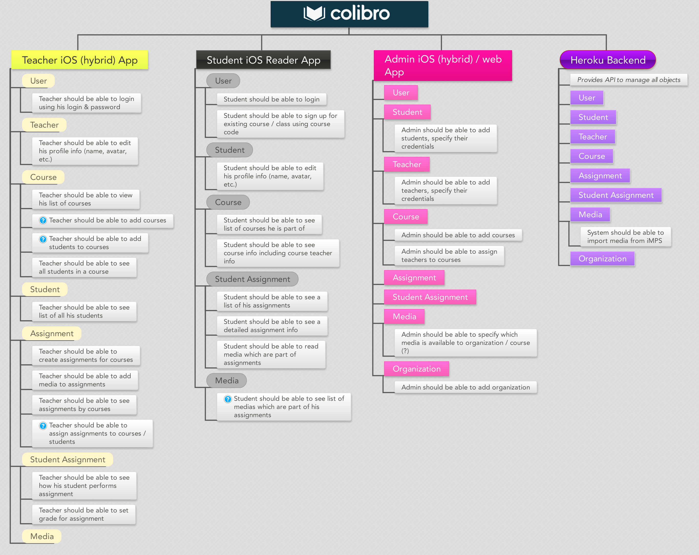
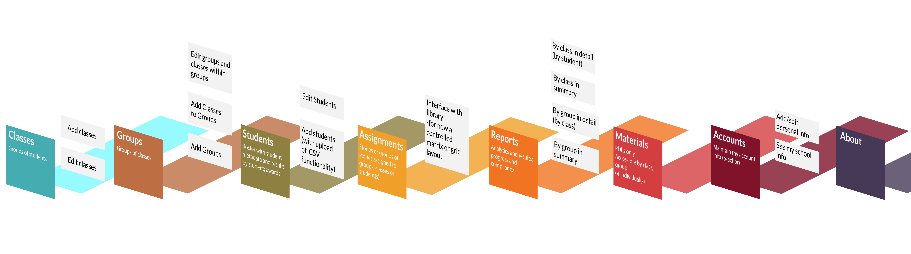
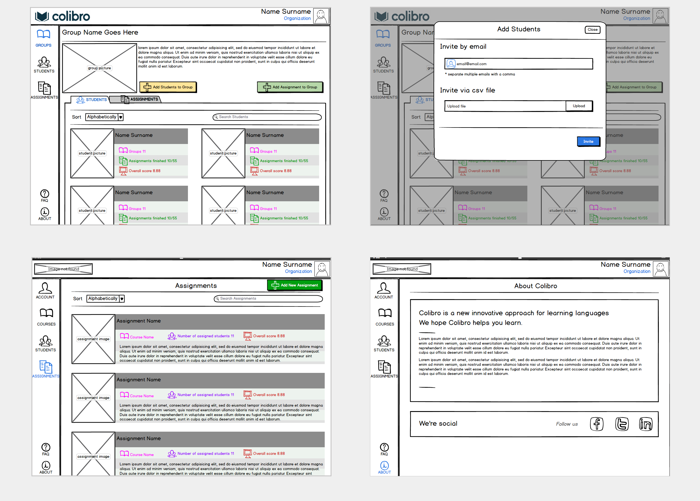
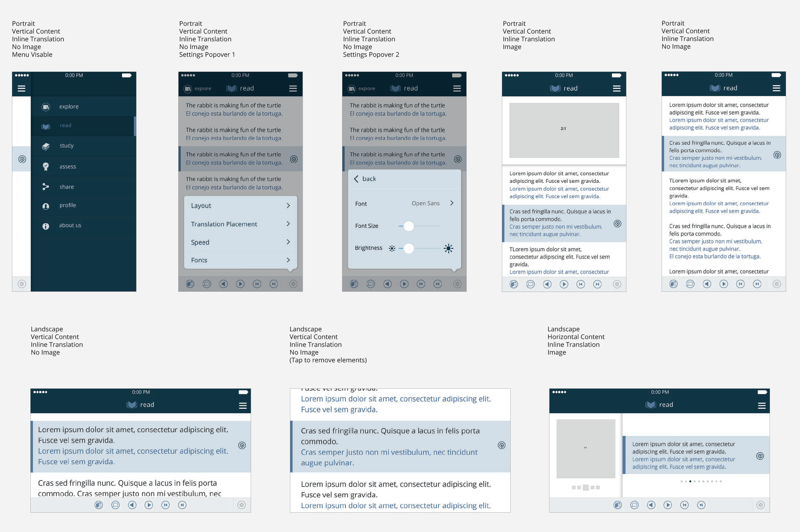
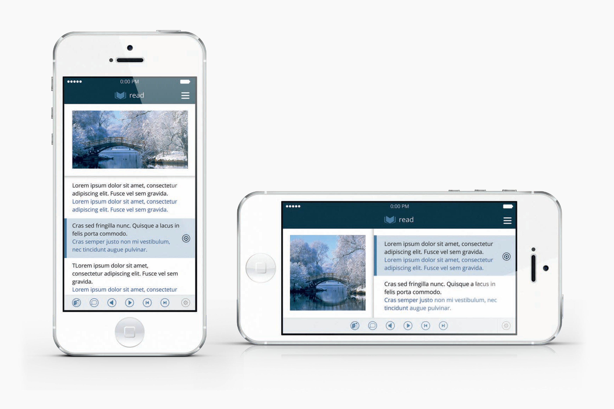
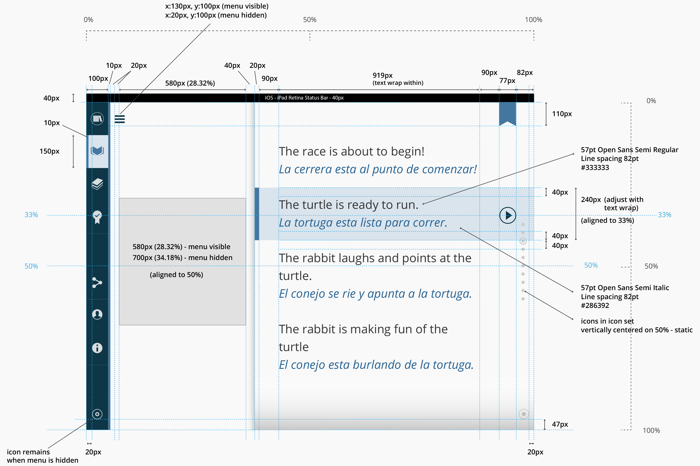
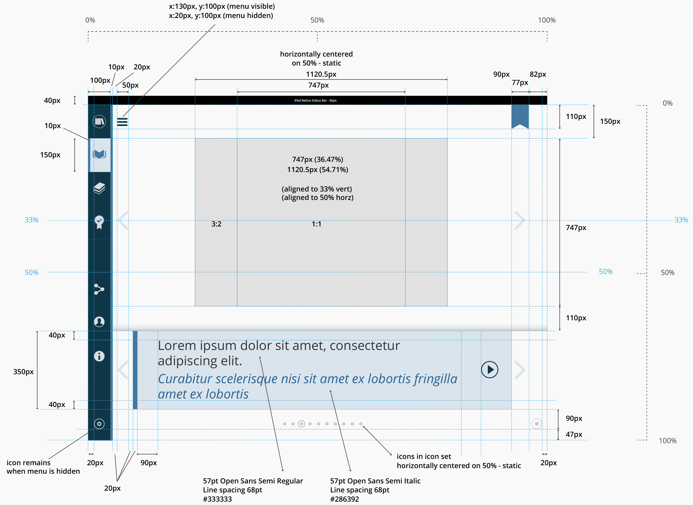
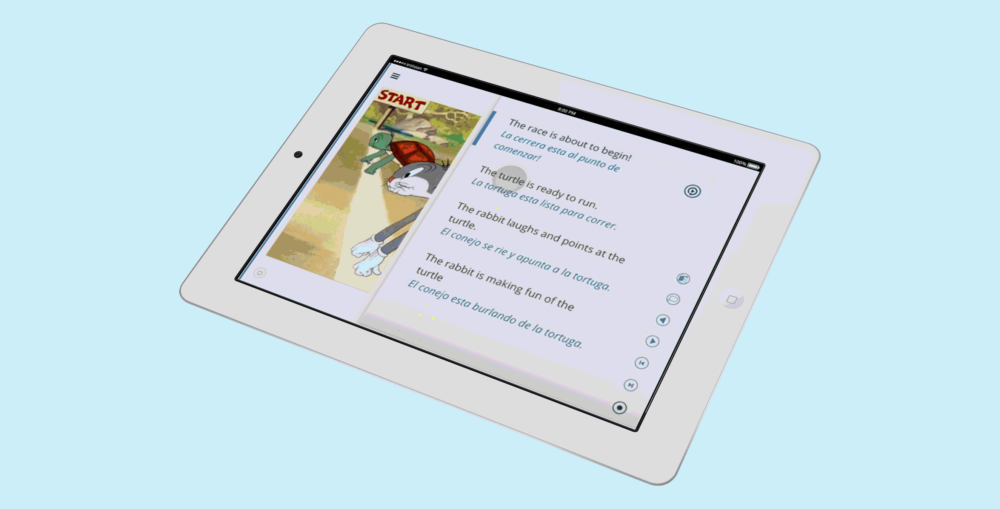

iPad prototypes for the bilingual reader

iPad prototypes for the bilingual reader with settings modal

The user stories we wrote out to define the functional requirements

The user stories we wrote out to define the functional requirements

Wireframe mockups of the screens for MVP

Hi-fi wireframes for mobile screens

iPhone mockups for landscape and portrait views

Design guides for the two view modes of the reader version of the app.

Design guides for the two view modes of the reader version of the app.

Interactive prototype animated walkthrough
